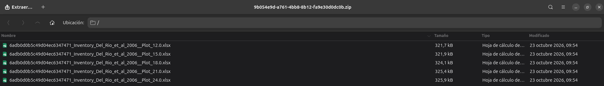
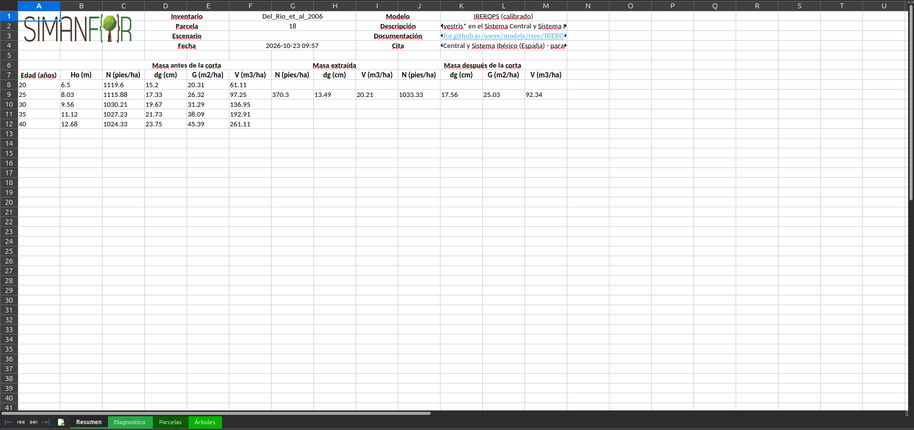
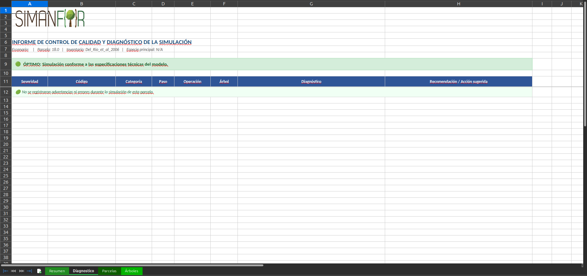
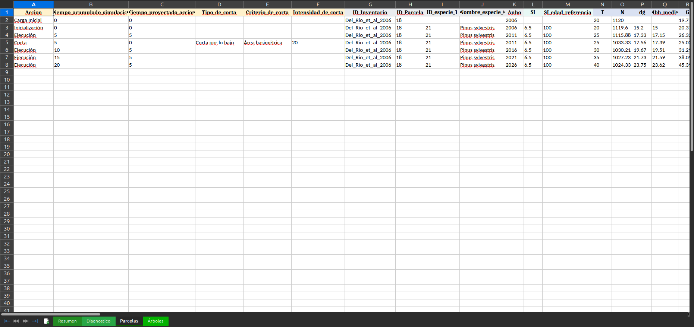
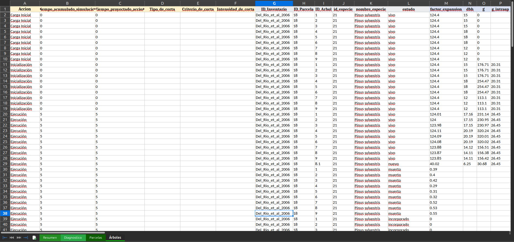

Interpretation of simulation outputs and results
A simulation in SIMANFOR generates a comprehensive set of dasometric outputs describing the quantitative, qualitative, and structural evolution of the forest stand over time. These results are compiled into Excel workbooks (.xlsx), with an individual workbook produced for each simulated plot.
This guide details the internal architecture of the output sheets, the definition of each variable category, the quality control checks applied by the simulation engine, and the practical interpretation of tree dynamics and commercial bucking.
Table of contents
- Structure of the output workbook
- Downloadable sample files and data
- Resumen (Summary) sheet: biometric synthesis and management balance
- Diagnóstico (Diagnosis) sheet: quality control and biological ranges
- Parcelas (Plots) sheet: stand-level biometric dynamics
- Árboles (Trees) sheet: individual-tree dynamics and tracking
Structure of the output workbook
Upon simulation completion, the platform packages all outputs into a compressed archive (.zip). Extracting this archive yields one spreadsheet file per simulated plot, formatted according to a standardized naming pattern:
<codigo_escenario>_Inventory_<id_inventario>__Plot_<id_parcela>.xlsx
For instance, in the walkthrough simulation presented in this web documentation, the scenario code is generated automatically, the inventory code inside the dataset is Del_Rio_et_al_2006, and the file contains five plots with ID_Parcela 12, 15, 18, 21, and 24. The extracted .zip content is shown below:

Each workbook is structured into four dedicated worksheets:
Resumen(Summary): Executive sheet featuring scenario and model metadata alongside a synoptic balance of stand metrics before, during, and after each silvicultural intervention.Diagnóstico(Diagnosis): Technical report validating compatibility between inventory inputs, model requirements, and simulated executions.Parcelas(Plots): Longitudinal table tracking the temporal trajectory of aggregate stand-level variables (density, basal area, volume, biomass, carbon, and diverse indices) across each scenario step.Árboles(Trees): Granular record at individual tree level, tracking tree vital status, biometric dimensions, and commercial log product assortment.
Downloadable sample files and data
To facilitate exploration while reviewing this guide, you can download the actual files generated by our reference simulation for Pinus sylvestris (Scots pine) projected with the IBEROPS (calibrated) model over 20 years with a 20% basal area thinning from below:
You can also download individual plot workbooks directly to inspect them in your preferred spreadsheet software:
- Plot 12 results workbook (XLSX)
- Plot 15 results workbook (XLSX)
- Plot 18 results workbook (XLSX)
- Plot 21 results workbook (XLSX)
- Plot 24 results workbook (XLSX)
Resumen (Summary) sheet: biometric synthesis and management balance
The Resumen sheet delivers an executive overview suitable for technical reports, management plans, and rapid assessments:

Simulation metadata block
The header rows (rows 1 to 4) record execution traceability details:
- Inventario (Inventory) and Parcela (Plot): Baseline inventory source file and numerical identifier of the analyzed sample plot.
- Modelo (Model): Official catalog model name (e.g., IBEROPS (calibrado)) and a summary of its ecological scope.
- Documentación (Documentation): Direct link to the official technical documentation for the model, in this case the IBEROPS (calibrated) model.
- Fecha (Date) and Cita (Citation): Timestamp of simulation execution and formal recommended citation strings for acknowledging both the specific forest model and the SIMANFOR platform in scientific literature and technical projects.
Silvicultural intervention balance
Starting from row 6, the sheet displays a comparative table organized into three horizontal blocks evaluating the quantitative impact of each scheduled silvicultural intervention:
| Dasometric block | Included variables | Forestry interpretation |
|---|---|---|
| Masa antes de la corta (Pre-harvest stand) | Age (years), $Ho$ (m), $N$ (trees/ha), $dg$ (cm), $G$ ($\text{m}^2/\text{ha}$), $V$ ($\text{m}^3/\text{ha}$) | Stand biometric condition at each projection step immediately preceding silvicultural treatment. |
| Masa extraída (Harvested timber) | $N$ (trees/ha), $dg$ (cm), $G$ ($\text{m}^2/\text{ha}$), $V$ ($\text{m}^3/\text{ha}$), % $N$, % $G$, % $V$ | Absolute and relative quantification of timber removed during thinnings or final harvest operations. |
| Masa después de la corta (Post-harvest stand) | $N$ (trees/ha), $dg$ (cm), $G$ ($\text{m}^2/\text{ha}$), $V$ ($\text{m}^3/\text{ha}$) | Residual growing stock remaining in the stand following intervention, serving as the starting baseline for the subsequent growth cycle. |
Diagnóstico (Diagnosis) sheet: quality control and biological ranges
The simulation engine incorporates an automated auditing module that monitors the mathematical consistency and biological plausibility of predictions at each step:

Quality traffic light
In the report header, SIMANFOR summarizes the overall execution status using three severity tiers:
- 🟢 Óptimo (Optimal): The simulation completed without warnings. All stand and tree variables remained within the empirical bounds and biological validity range of the model calibration.
- 🟡 Aviso (Warning): The simulation completed calculations, but specific metrics (e.g., tree slenderness, mortality rates, or periodic diameter increments) slightly exceeded typical biological expectations. Flagged entries should be reviewed in the diagnostic table below.
- 🔴 Error: The simulation encountered a severe numerical discontinuity, a structural mismatch between inventory data and model requirements, or an invalid parameter that compromises projection accuracy.
Diagnostic issues table
When warnings or notifications are recorded, the table breaks down each issue across ten diagnostic columns:
- Severidad (Severity): Impact level (
WARNINGorERROR). - Código (Code): Internal rule identifier triggered during execution.
- Categoría (Category): Biological or dasometric module involved (mortality, diameter growth, height-diameter allometry, volume, or biomass).
- Paso (Step): Chronological scenario step index where the condition was flagged.
- Operación (Operation): Operation type (
EjecuciónorCorta). - Árbol (Tree): Target tree identifier (blank for stand-level evaluations).
- Variable: Name of the audited metric (e.g.,
dbh,h, orratio_esbeltez). - Valor observado (Observed value): Numerical value computed by the engine.
- Rango admisible (Admissible range): Valid domain defined by the model (tolerable minimum and maximum thresholds).
- Mensaje (Message): Explanatory description of the anomaly and recommended interpretation.
Parcelas (Plots) sheet: stand-level biometric dynamics
The Parcelas sheet tracks the complete stand-level chronology across time, presenting each stage of the prescription as a distinct row:

Control and timeline columns
The initial columns define the operational context and temporal framework:
Accion: Action type recorded in the row:Carga Inicial: Raw baseline measurements loaded from the input inventory file.Inicialización: Values calibrated following assignment of derived baseline metrics by the model (e.g., heights calculated via $h/d$ equations, initial volumes, and biomass components).Ejecución: Stand state upon concluding a projection period (natural growth).Corta: Immediate post-intervention stand state following a thinning or harvest operation.
Tiempo_acumulado_simulacion: Cumulative years elapsed since the beginning of the simulation.Tiempo_proyectado_accion: Duration of the current operational step (e.g.,5for growth projections and0for instantaneous cutting steps).Tipo_de_corta,Criterio_de_corta,Intensidad_de_corta: Harvest specifications configured for the step (e.g., Corta por lo bajo, Área basimétrica, and 20%).ID_Inventario,ID_Parcela,ID_especie: Unique identifiers for inventory dataset, sample plot, and species code.AnhoandT: Calendar year and stand physiological age for the given step.
Stand dasometric variables
Subsequent columns present aggregate biometric metrics:
- Stand density ($N$): Live trees per hectare (
N), natural mortality (N_muerto), harvested trees (N_corta), and recruitment (N_incorporado). - Basal area ($G$): Total cross-sectional area at 1.30 m in $\text{m}^2/\text{ha}$ (
G), alongside harvested basal area (G_corta) and natural mortality (G_muerta). - Representative diameters: Arithmetic mean diameter (
dbh_medio), quadratic mean diameter (dg), dominant diameter (Do, mean of the 100 thickest trees per hectare), and bounds (dbh_minimo,dbh_maximo). - Heights: Mean stand height (
h_media) and Assmann dominant height (Ho, mean of the 100 tallest trees per hectare).
For mathematical definitions, refer to the variables: dimensions and productivity catalogs.
Timber volume and commercial product assortment
Merchantable timber volume is quantified at plot scale:
- Global volumes: Over-bark stem volume (
V_con_corteza), under-bark stem volume (V_sin_corteza), and bark volume (V_de_corteza), all expressed in $\text{m}^3/\text{ha}$. - Commercial log bucking assortment: When the model includes industrial product taper tariffs, volume is classified by commercial log specifications:
V_desenrolloandV_chapa: Large-diameter high-value veneer logs.V_sierra_gruesa,V_sierra, andV_sierra_canter: Sawtimber of varied dimensional classes.V_postesandV_estacas: Poles and agricultural stakes.V_trituracion: Small-diameter roundwood for pulp or particleboard panels.
Not all forest models support commercial assortment bucking, as species-specific stem profile equations are required. Where unsupported, these columns are omitted from results. Review the variables: wood products guide and the models catalog to check feature availability per model.
Biomass fractions and carbon balance
SIMANFOR estimates dry matter biomass using species-specific allometric systems (in tons of dry matter per hectare, $\text{t}/\text{ha}$):
- Above-ground fractions: Stem wood (
WS), thick branches with diameter $> 7\ \text{cm}$ (WSW), medium branches between $2$ and $7\ \text{cm}$ (WB2_7), fine branches with needles/leaves (WTBL), and total above-ground biomass (WA). - Below-ground fraction: Coarse and fine root biomass (
WR). - Total biomass (
WT): Integral biomass across all compartments ($WT = WA + WR$). - Carbon stocks: Elemental carbon stored in each tree component (
Carbono_tronco,Carbono_ramas,Carbono_aereo,Carbono_raices, andCarbono_total), derived by applying species-specific dry matter carbon conversion factors.
Further details are available in variables: biomass and variables: carbon, with model compatibility noted in the models catalog.
Stand structure, competition, and biodiversity
The final columns capture advanced stand structural and ecological parameters:
- Competition and relative density: Reineke stand density index (
SDI), relative density ratio to biological maximum (r_(SDI)), Hart-Becking spacing index under square and triangular spacing (Indice_Hart,Indice_Hart_tresbolillo), and stand slenderness ratio (Esbeltez= $\frac{Hm}{dg} \times 100$). - Structural and species diversity: Coefficients of variation for diameter (
CV_dbh) and height (CV_altura), Shannon indices for dimensional stratification, and classic taxonomic diversity metrics (Shannon-Weaver, Simpson, Margalef, and Pielou).
Árboles (Trees) sheet: individual-tree dynamics and tracking
For individual-tree models, the Árboles sheet records the step-by-step trajectory of every measured tree within the plot:

Identification and vital status
Each row captures an individual tree record at a specific simulation step:
ID_Arbol: Unique numerical identifier assigned to each tree in the initial inventory, ensuring continuity throughout projections.id_especieandnombre_especie: National Forest Inventory species code (21) and binomial scientific name (Pinus sylvestris).estado: Vital or management status of the tree at that step:vivo: Live tree growing actively and continuing into the next projection interval.cortado: Tree harvested in its entirety during a thinning or harvest step (100% of its expansion factor removed). Does not appear in subsequent projection intervals.parcialmente_cortado: Tree whose expansion factor was partially harvested during a percentage-based intervention. The extracted fraction is logged at that step, and the residual fraction remains in the stand asvivo.muerto: Tree that died from natural mortality (self-thinning competition or senescence) during the projection period.incorporado: Tree recruited from natural regeneration that attained the minimum inventory diameter threshold (ingrowth).nuevo: Tree assigned a newly generated identification code upon entering the simulated stand via natural regeneration.
factor_expansion: Tree expansion factor ($expan$), representing the statistical weight (trees per hectare) embodied by the measured sample tree. See its definition here.
Allometry, growth, and competition
- Dimensions and increments: Diameter at breast height (
dbh), total height (altura), individual basal area (g,g_ha), and their respective periodic increments (dbh_i,g_i,altura_i,v_i,wt_i) evaluated by the model equations (see variables: dimensions). - Competition and crown metrics: Basal area of larger trees (
bal), split by intra- and inter-specific pressure (bal_intrasp,bal_intersp), alongside crown parameters (hcb,cr,lcw,hlcw) reflecting vertical competitive suppression (see variables: competition).
Individual timber products and carbon
Mirroring the stand-level sheet but calculated for individual stems, columns detail tree-level volumes (v_con_corteza, v_ha), commercial log bucking categories (v_chapa, v_sierra_gruesa, v_sierra, v_trituracion), biomass components (ws, wb, wa, wr, wt), and elemental carbon fixation (carbono_total).
Non-timber forest products
While not applicable to this Scots pine reference run, specialized models calculate non-timber forest products (such as stone pine cone and nut production in Pinus pinea, cork yields in Quercus suber, resin tapping in Pinus pinaster, or edible mushroom yields in mycological models). When the active model implements these equations, the corresponding columns are automatically included in both the plot and tree sheets; otherwise, they are omitted to streamline output files. Consult the variables: non-timber resources guide and the models catalog.